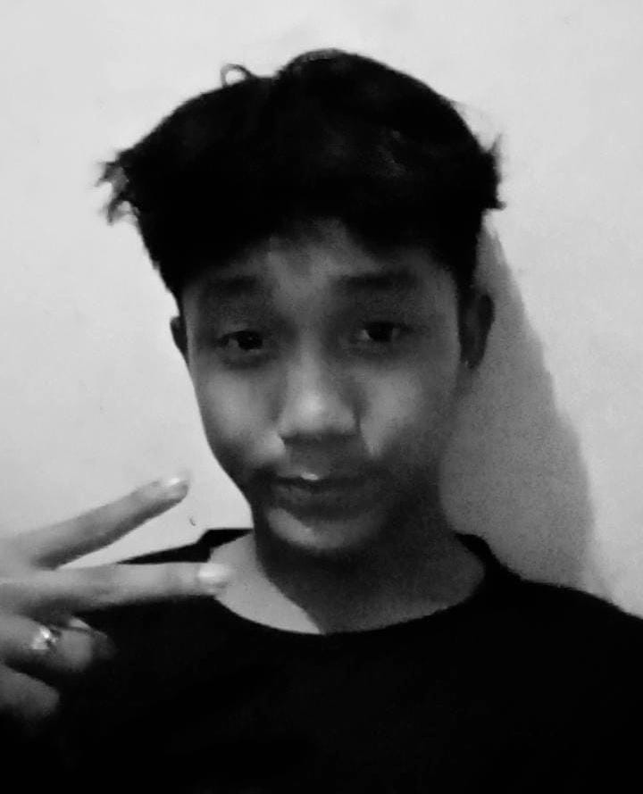

biodata
Umur: 17 tahun
Hobi: Sepak bola , Hiling
Alamat: Perumahan Haji Weria
Telepon: 085593487263
Pagi itu, Fachri duduk di depan jendela kamar, menatap dunia yang terus bergerak di luar sana. Terasa aneh, karena meskipun dunia penuh dengan hiruk-pikuk kehidupan, ia merasa seperti ada jarak antara dirinya dan orang-orang di sekitarnya.
Sejak kecil, Fachri selalu dikelilingi banyak orang. Teman-teman, keluarga, dan keramaian sehari-hari. Namun, seiring waktu, dia merasa seperti ada kekosongan yang sulit dijelaskan. Meski dekat dengan banyak orang, ada kalanya ia merasa tidak terhubung sepenuhnya dengan mereka.
Di titik tertentu, Fachri mulai merasa kesepian, bahkan saat berada di tengah-tengah keramaian. Ia sering bertanya-tanya dalam hati, apakah ada yang benar-benar mengerti siapa dirinya? Apa yang sedang terjadi pada dirinya? Mengapa ia merasa terisolasi?
Namun, di suatu malam yang sunyi, Fachri memutuskan untuk tidak lagi melawan perasaan itu. Ia menerima kesendirian bukan sebagai sesuatu yang harus dihindari, melainkan sebagai kesempatan untuk menemukan siapa dirinya yang sejati. Ia mulai meluangkan waktu untuk merenung, menulis, dan berkomunikasi dengan dirinya sendiri.
Selama proses itu, Fachri mulai memahami bahwa kesendirian memberikan ruang untuk pemahaman yang lebih dalam. Ia belajar untuk berdamai dengan pikirannya, menerima ketidaksempurnaan, dan merasakan kedamaian yang datang dengan kesendirian yang disambut dengan lapang dada.
Hari demi hari, Fachri semakin kuat. Ia tahu bahwa meskipun hidup penuh dengan tantangan dan ketidakpastian, ia memiliki kekuatan untuk menghadapinya sendiri. Kini, ia memahami bahwa kesendirian bukanlah musuh, melainkan teman yang akan membantunya tumbuh menjadi versi terbaik dari dirinya.